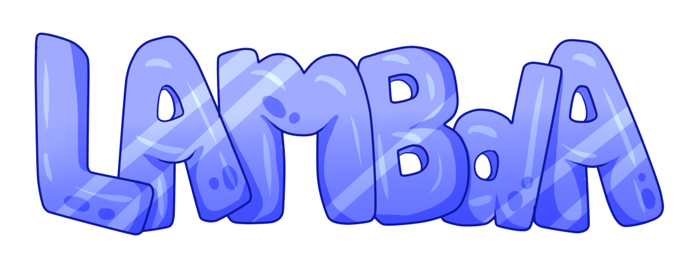
Lambda Clan Petpet Guide
Check out these awesome creatures who originate from the Lambda clan!
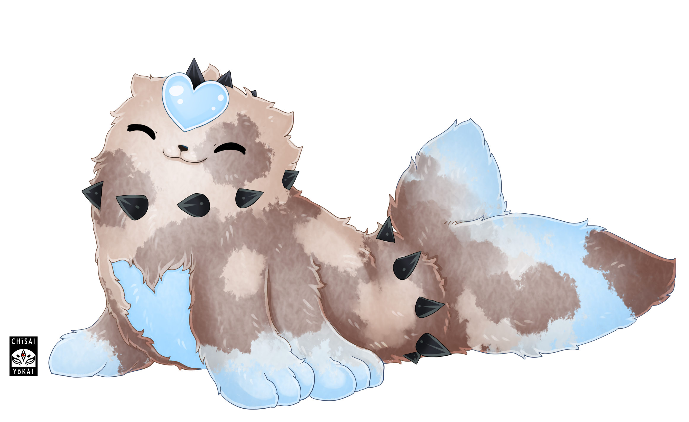
Nenero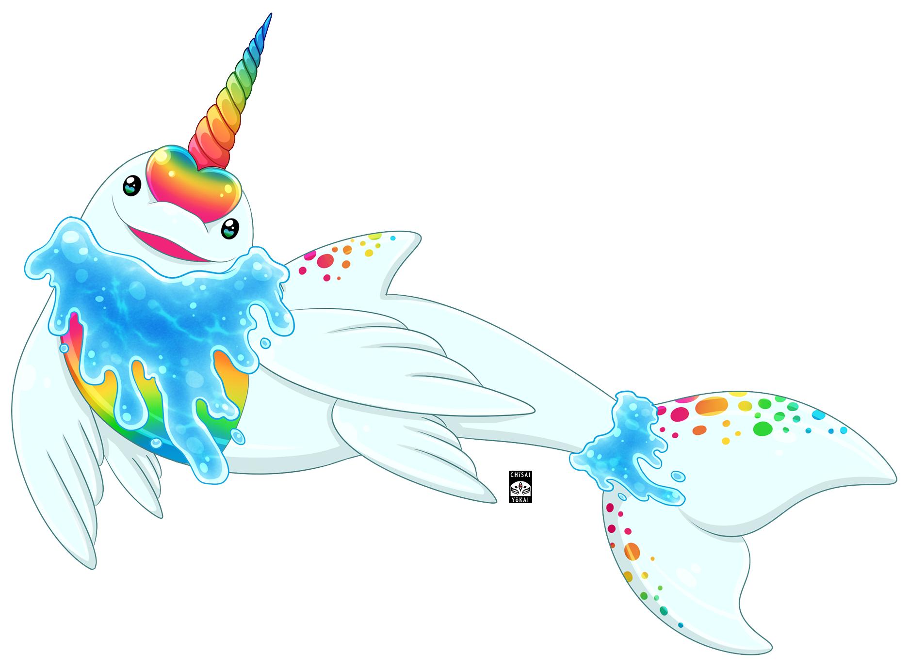
Falanero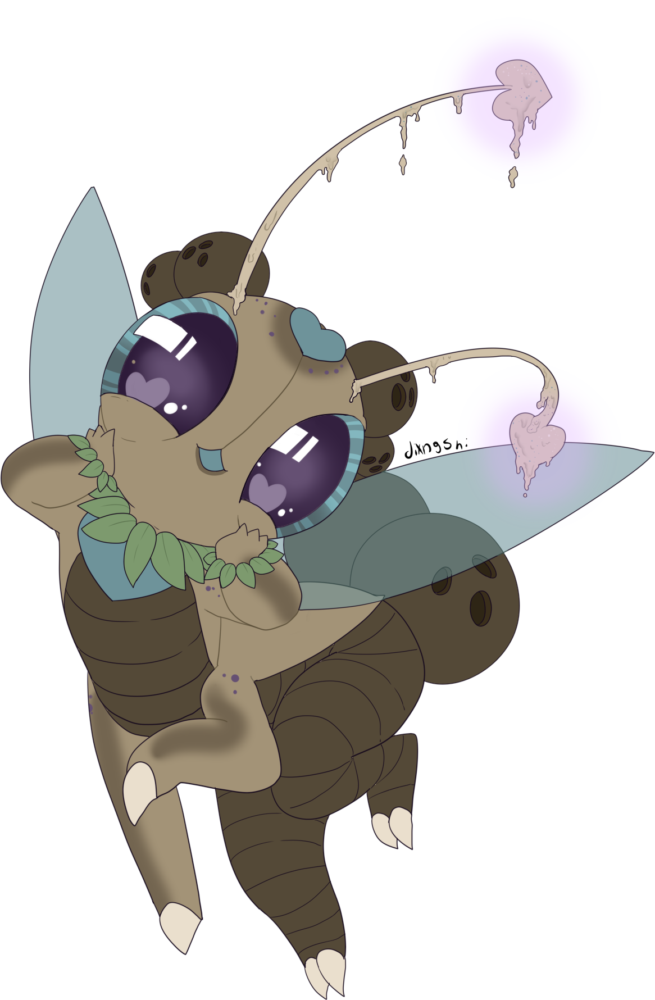
Pu'uwai Agapi Pu'uwai Mantis
Pu'uwai Mantis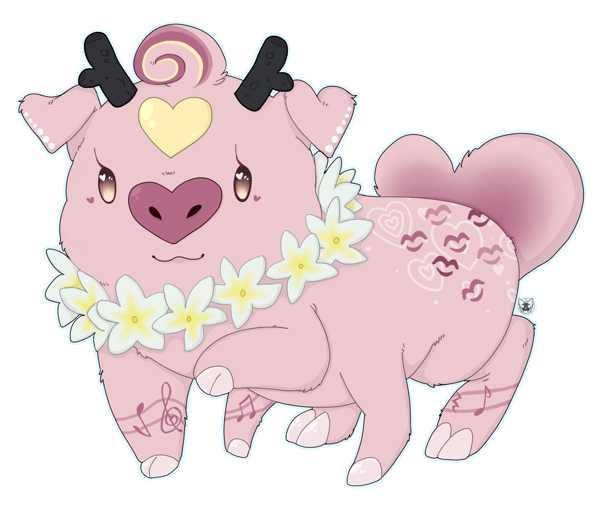
Puwala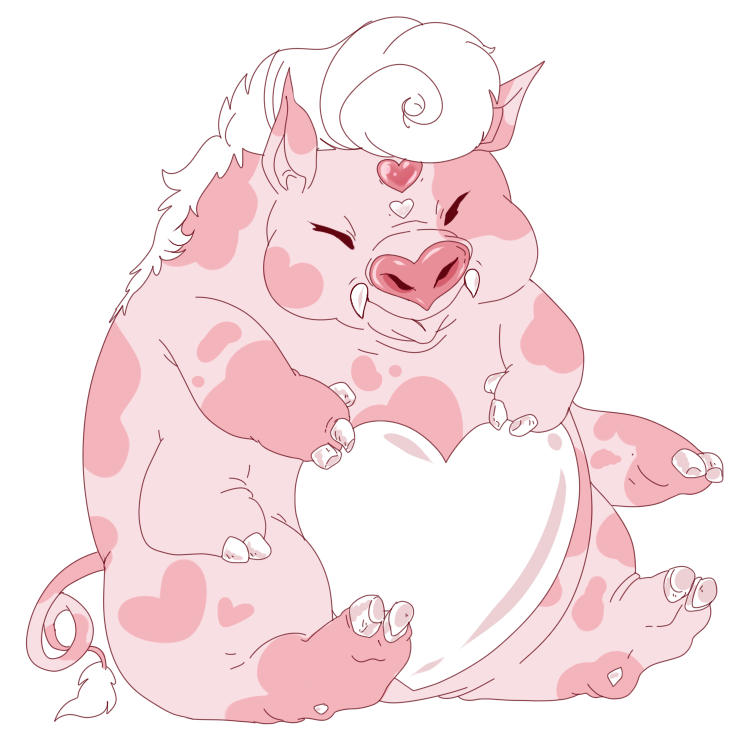
Puorc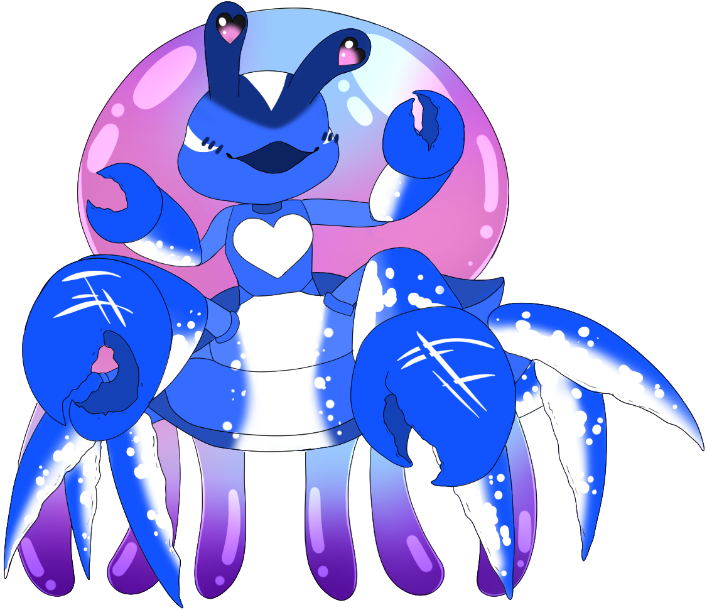
KumimicNenero
2019 . 1st Wave . Pre-Evolved . Empathy
{kind=link}
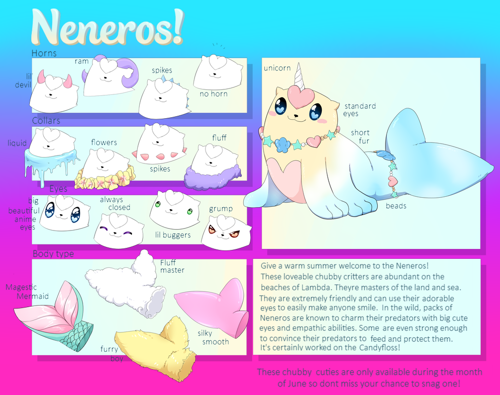
Check out this Community Art of Floss and their Neneros! The Nenero Celebrate their Pet Day on April 1stYou can claim a free Nenero on that day in our discord server!
The Nenero is a lovable, chubby critter that is highly abundant on the tropical beaches and oceans of Lambda.
However, these adaptable creatures are not limited to warm climates, as travelers can find them swimming through most seas, including freezing arctic waters near Pzekazi and Pogoto.
Their unique bodies allow them to thrive across diverse temperatures, making them a common sight around coastal regions.
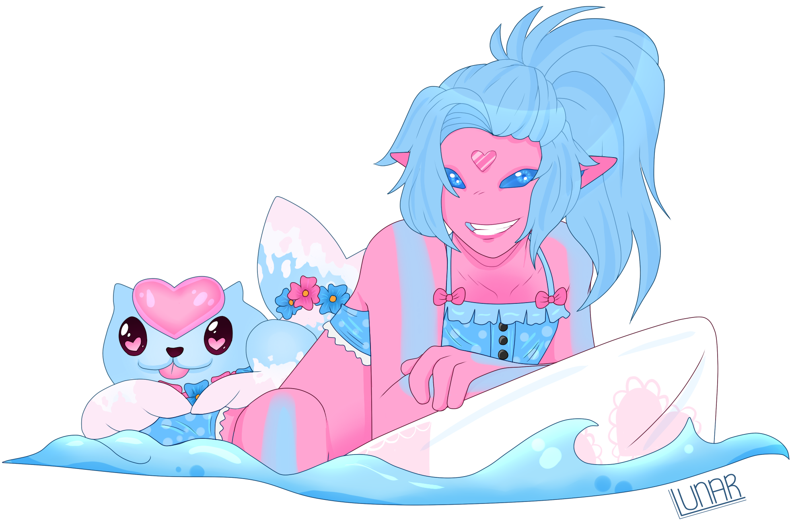
These critters come in many distinct forms, ranging from smooth-skinned bodies to layers of thick, fluffy fur. Some breeds even develop sleek scales and fins like a fish, depending on their environment and specific breed. This incredible variety in appearance makes them highly versatile and perfectly suited for many different locations around the globe.
As incredibly docile and friendly creatures, Neneros possess a powerful sense of empathy that influences the world around them. They project warm, comforting emotions that naturally convince nearby creatures to treat them with kindness and affection. In some remarkable cases, these empathetic powers are strong enough to completely win over dangerous predators, turning enemies into protectors.
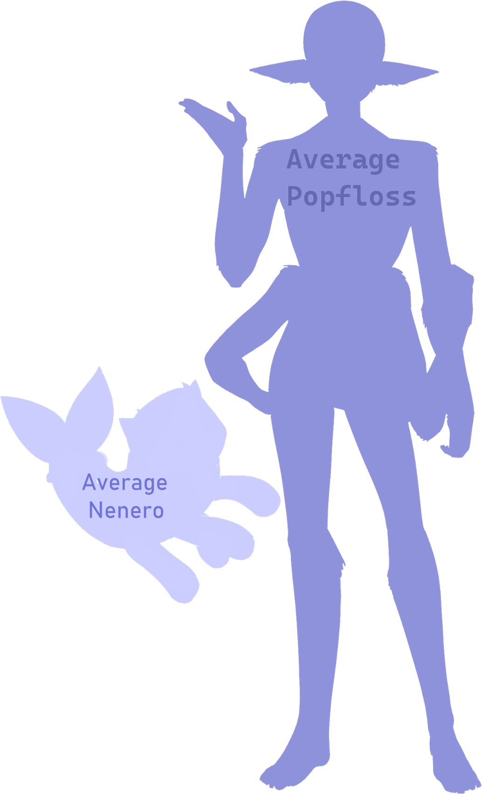
These semi-aquatic buddies split their time between the deep ocean waters and the solid ground. Groups of Neneros are commonly seen lounging on sandy beaches and sunning themselves on rocky shores. Because they adapt so easily to land and water, their colonies stretch across the entire world of Caramella.
Falanero
2020 . 1st Wave . Evolved . Empathy
{kind=link}
With the grace and sea surfing speed reminiscent of the sea creatures in fairytales, Falanero make a splash in the lives of those who can call one friend. Once thought of as mermaids by the fisherman scouring the seas of Lambda,
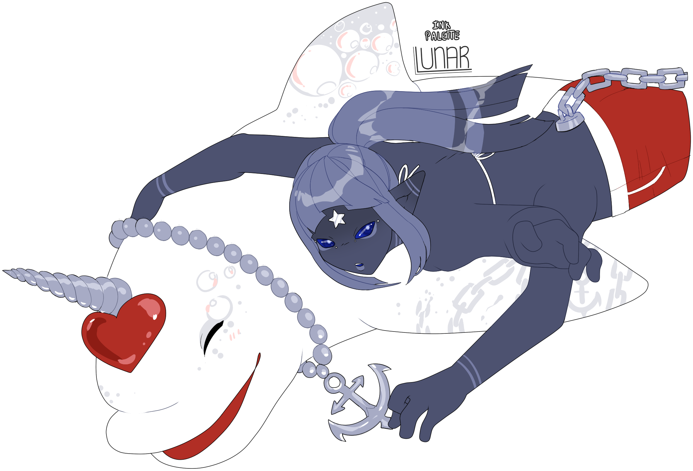
these rare and majestic creatures roam the land and seas of Caramella using their empathic abilities to bring ease and comfort to those lucky enough to see them and befriend one.Many sailors account tales of watching late-night waves only to spot a flash of long flowing hair pass under their ship into the waters below, many convinced there truly are sea maidens in their wake. Some floss have even traveled great distances in hopes to catch sight of the mysterious creatures. Falaneros have the wild spirit and freedom of the sea, wandering with their beloved Neneros to travel the world around them, so taming them can be an arduous task. Once you reel in their adventurous spirit with the promise of love and many, many accompanied adventures they make steadfast and reliable companions.
Check out this Community Art of Floss and their Falaneros! The Falanero Celebrate their Pet Day on April 30th
You can claim a free Falanero on that day in our discord server!
Pu'uwai Agapi
2021 . 2nd Wave . Un-Evolved . Empathy
{kind=link}
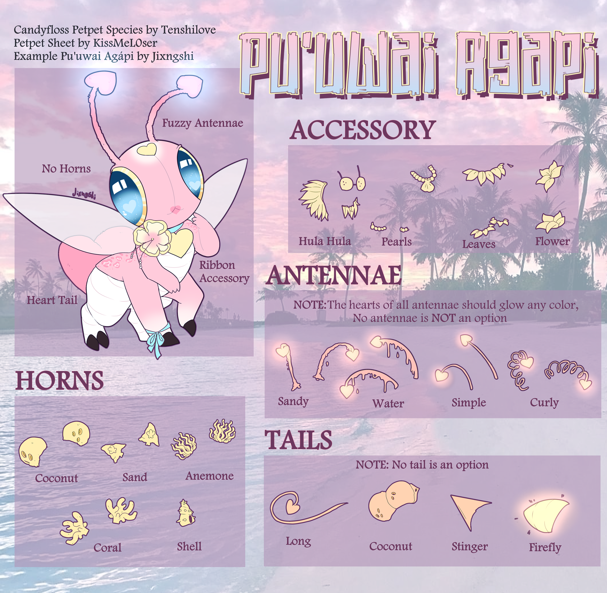
Check out this Community Art of Floss and their Pu'uwai Agapi! The Pu'uwai Agapi Celebrate their Pet Day on November 11thYou can claim a free Pu'uwai Agapi on that day in our discord server!
Oh! Those summer nights on Lambda are something to behold!
The moon's reflection on the water, the hot sand and the fire lit tikis dotting the beach are a sight to behold!
But the most beautiful of all are the swarms of Pu'uwai Agapi that light up the night like stars fallen to Caramella! The Pu'uwai Agapi are a species of small bug-like Petpet
that stand about the size of a Softball! They are scaled and smooth with hard shimmering shells over their top sides and small claws on their back toes. They walk on their back 4
legs and use their soft from appendages to gently  caress flowers and grab hold of the hair and fur of their companions.
caress flowers and grab hold of the hair and fur of their companions.
The long antennae on their heads glow with a pulsating soft light and can be seen from afar after dark. The Pu'uwai Agapi are a mutualistic creature who thrives by choosing
another creature to pair and feed off of the creature's negative emotions. The strong mouth of the Agapi opens to suck away at their hosts (it tickles a bit) to strip them of
negative feelings. The Pu'uwai Agapi seem to gain sustenance from converting these emotions to energy, as a result the host creature will feel happy,
relaxed and some say you may even fall in love if you get kissed by a Pu'uwai Agapi and then gaze into someone's eyes. In Lambda it is considered good luck for lovers
to be kissed by Agapi together. Some floss has nick named the Agapi "love bugs" due to their abilities.
Pu'uwai Mantis
2022 . 2nd Wave . Evolved . Empathy
{kind=link}
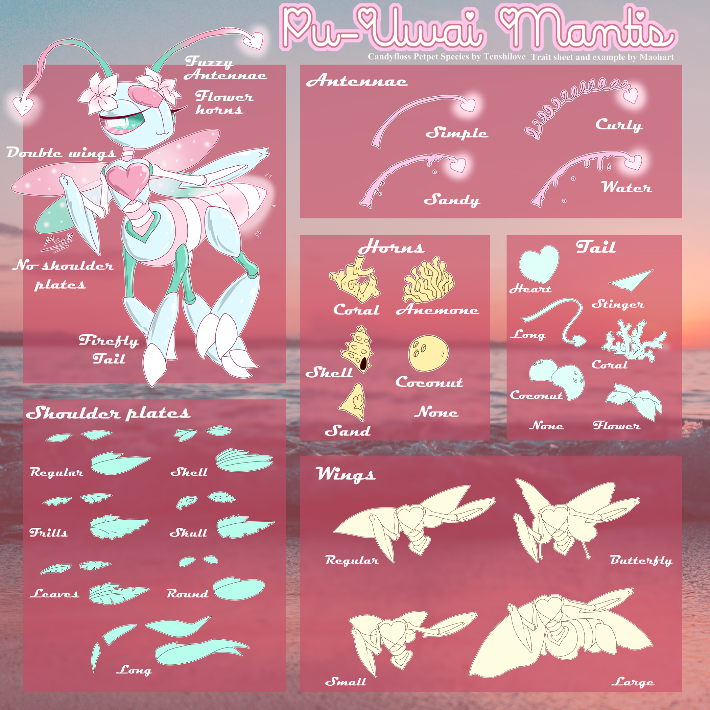
Check out this Community Art of Floss and their Pu'uwai Mantis! The Pu'uwai Mantis Celebrate their Pet Day on August 30thYou can claim a free Pu'uwai Mantis on that day in our discord server!
Standing about two feet tall, the Pu'Uwai Mantis remains the smallest of the evolved petpets. This armored buggy is a resilient pet,
that loves to cuddle and stick close to the floss they are bonded to. They walk on their back four limbs and will refuse to let their front arms become dirty.
Though they are more often found fluttering in the air.
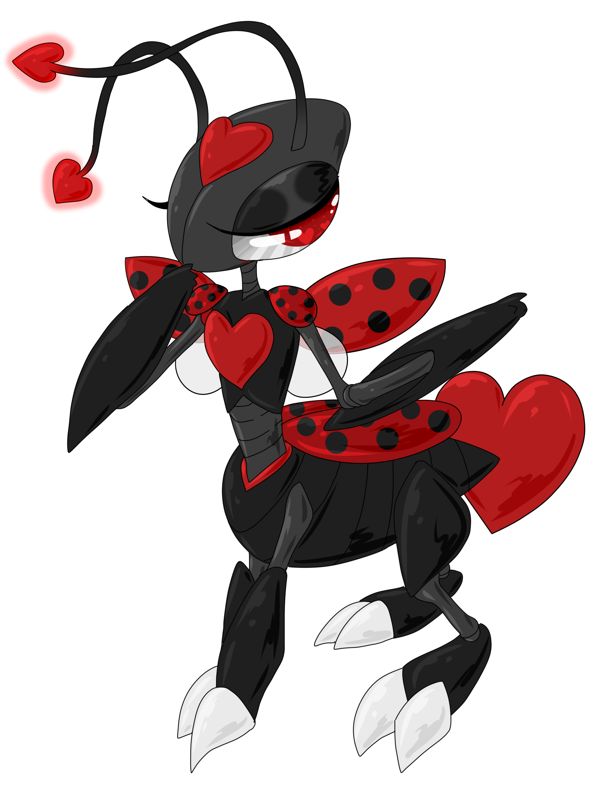
The wings sprouting from their back create a humming sound when they fly and create a chirping would when rubbed together. This 'chirp' is a signature sound in Lambda and marks the start of summer in other clans when the Pu'Uwai migrate north when the weather is at its hottest.Like their pre-evolution the Pu'Uwai Mantis has the power to harness emotions from the floss they come in contact with and use this as substance. The tastes of a Mantis are more refined than the Agapi however, and they tend to desire more negative emotions like jealousy, fear, and anger, and will tend to stick close to floss that frequently have these feelings so they can feed off of them.
When you see a Pu'Uwai Mantis following someone, it's a sign that they may be depressed or heart broken, this has caused the Mantis to gain notoriety for being bringers of sadness.
Puwala
2023 . 3rd Wave . Un-Evolved . Empathy
{kind=link}
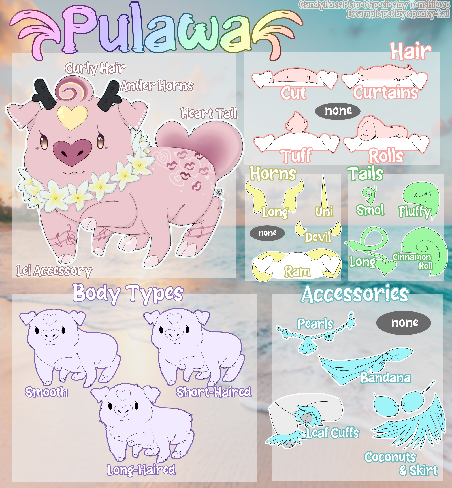
Check out this Community Art of Floss and their Puwala! The Puwala Celebrate their Pet Day on February 20thYou can claim a free Puwala on that day in our discord server!
Oh! The Pulawa are little pudgy piggies that call Lambda their home! They can vary from adorable household pets that
love to play and eat and roll about, to dangerous wild beasts that can be a real threat if you don't know how to handle them.
The furry and wild Pulawa that roam the jungles of Karpos can be unpredictable and territorial,
while in contrast, the short haired and hairless variants are often kept as household pets and are easily taught to be
gentle and docile. These little potatoes are lazy, cuddly and gluttonous and are known to have very wild and exaggerated emotional reactions.
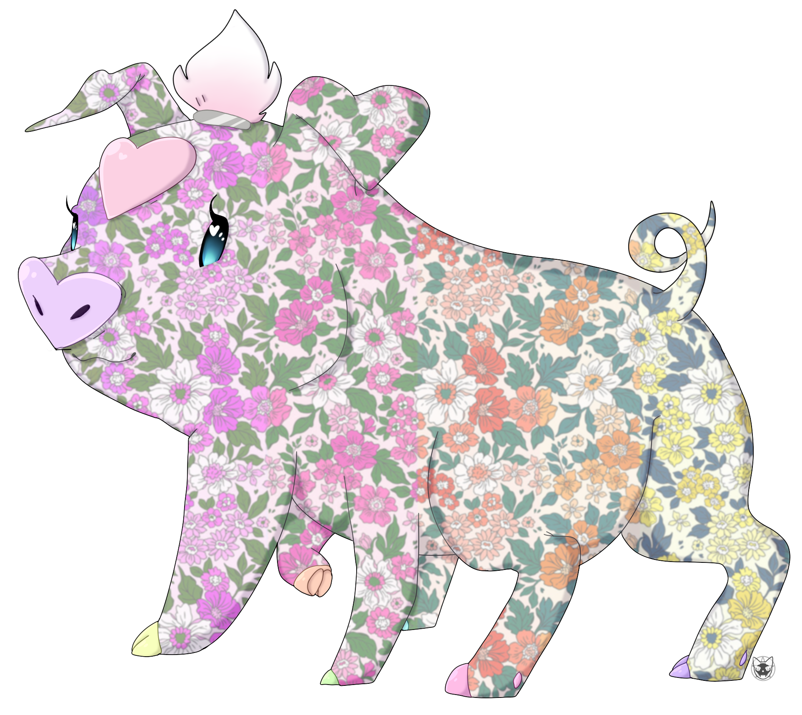
This can be seen as clinginess to their primary care giver, fear of ridiculous things for trivial reasons (like being afraid of the dark or refrigerators), as extreme anger when they are wronged, and easy to trigger happiness from small gestures or snacks. Many floss find these wild emotional reactions as hilarious and have won this petpet the heart of all of Caramella.Puorc
2024 . 3rd Wave . Evolved . Empathy
{kind=link}
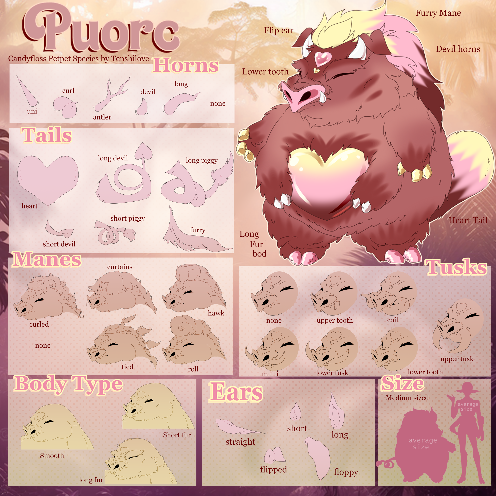
Check out this Community Art of Floss and their Puorc! The Puorc Celebrate their Pet Day on October 3rdYou can claim a free Puorc on that day in our discord server!
These massive piggies are powerful and dangerous when encountered in the wild. The Puorc dont run in packs together but do usually have a crew of 20-50 Puwala that they watch
over and protect. The Puorc is a surprisingly intelligent beast and similar to creatures like the Ponbuki they can be found to carry tools and weapons on them like large stick
clubs and sharpened rock blades.
They are aggressive to floss that come into their territory and even more viscous if you harm one of the Puwala that are under their watch. The Puorc usually walk on 2 legs but
are known to get down on all 6 and charge at their opponents, using their massive weight to overwhelm them. The Puorc are known to use their Lambdan empathic abilities to strike fear
in the hearts of anyone who threatens their pack and will only physically attack if their fear tactics don't work. The Puorc has traditionally been hunted and eaten in Lambda and is
an extremely delicious creature!
Because of their deliciousness, the Puorc have been bred to be kinder and more docile and are raised for eating in farms all across
Caramella. Puorcs are incredibly hard to tame if you find one in the wild but if you raise up a Puwala to evolution your tamed Puorc will be incredibly affectionate to you and
aggressive to everyone else. They will see you as one of their Puwala pack and protect you from harm. In some areas of Delta, packs of evolved Puorcs are known to roam the plains
and forests dressed in rudimentary armor and armed with weapons. These Puorc packs are very dangerous and will attack travelers to steal their clothes, weapons, and they can even
eat the floss! Many adventurers in Delta make a living from hunting down these Puorcs to help keep their towns and villages safe.
Kūmimic
2026 . 4th wave . Un-Evolved . Empathy
 The Kūmimic Celebrate their Pet Day on xxxx
The Kūmimic Celebrate their Pet Day on xxxxYou can claim a free Kūmimic on that day in our discord server!
infoinfo